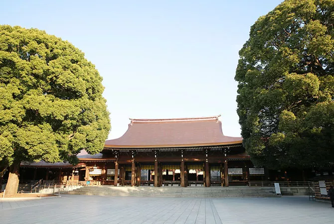
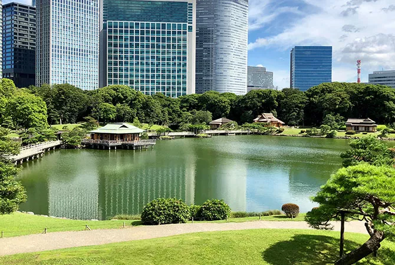
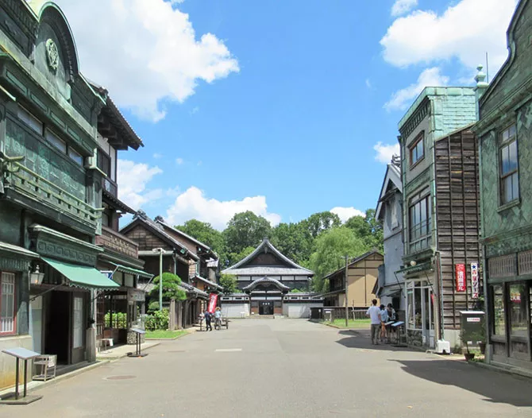
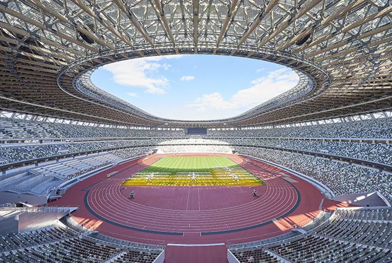
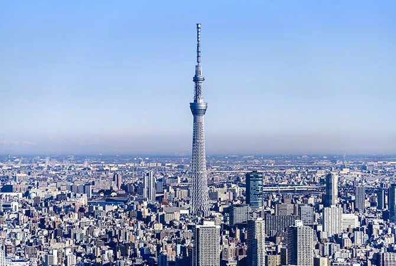
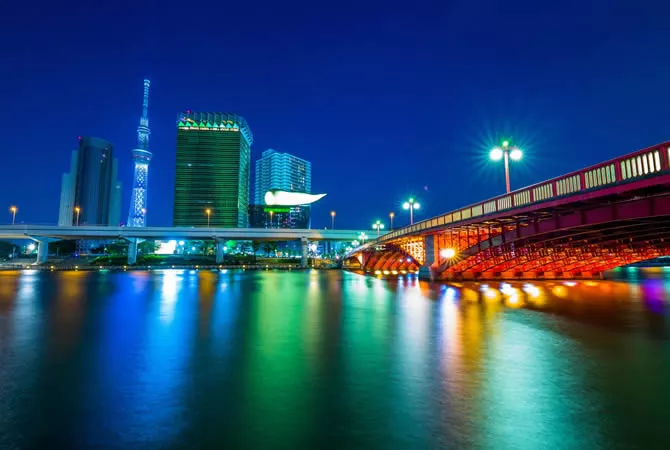
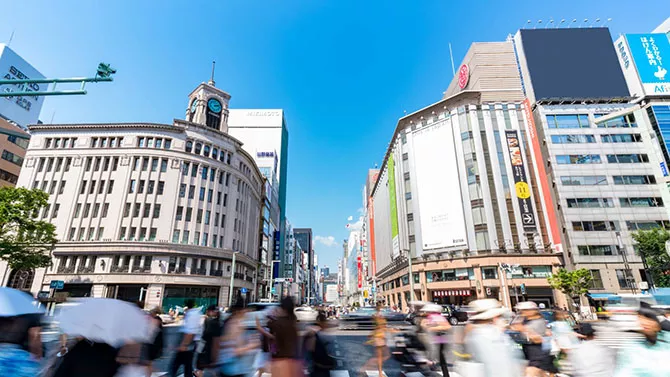
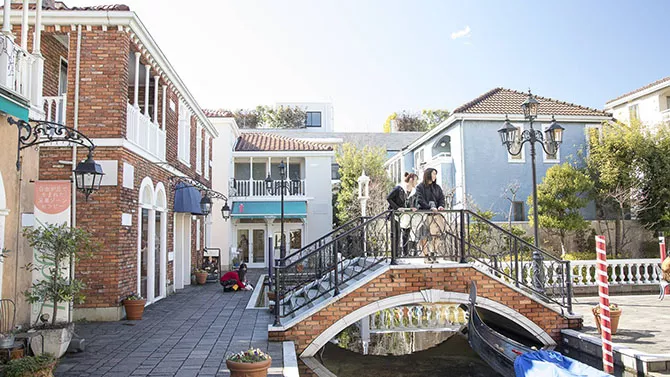
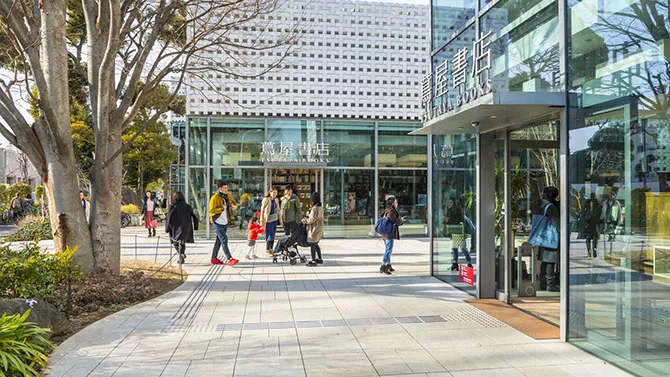

- Sensoji Temple
 Asakusa’s Sensoji Temple is a tremendously popular destination for visitors. Beyond the iconic
Kaminarimon Gate is Nakamise Dori souvenir-shopping street, which leads to a complex of
fascinating religious structures.
Asakusa’s Sensoji Temple is a tremendously popular destination for visitors. Beyond the iconic
Kaminarimon Gate is Nakamise Dori souvenir-shopping street, which leads to a complex of
fascinating religious structures. - Meiji Jingu
 Meiji Jingu (Shinto Shrine) is set in a soothing forest only a few minutes’ walk from JR Harajuku Station. The shrine was built to commemorate the virtues of Emperor Meiji and Empress Shoken. In 2020 the shrine marks its 100th anniversary.
- Hamarikyu Gardens
 Hamarikyu Gardens is a great place to relax and to reflect on the history of Tokyo when it was still called Edo. Different feudal lords used the space for various purposes, ranging from recitals and rice cultivation to military training and falconry.
- Edo-Tokyo Open Air Architectural Museum
 Spend a day away from the bustling city streets exploring a museum of relocated historical buildings. Set in a beautiful park in Tokyo’s western suburbs.
- Olympic Sites
 For history in the making, check out the Olympic sites for the Tokyo 2020 Olympic and Paralympic Games, including the New National Stadium, the Tokyo Metropolitan Gymnasium, Nippon Budokan, and Ryogoku Kokugikan.
- Tokyo Skytree
 On a clear day, the world’s tallest tower offers views for miles and miles in every direction. Not for the faint of heart, but great for thrill-seekers!
- Tokyo Tower
 The Beautiful Tokyo Tower was completed in 1958 and remains a very popular lookout point.
Just a short distance from such well-known districts as Roppongi and Toranomon.
The Beautiful Tokyo Tower was completed in 1958 and remains a very popular lookout point.
Just a short distance from such well-known districts as Roppongi and Toranomon. - Sumida River
 A smooth cruise along the Sumida River is relaxing, romantic, and full of photo opportunities, especially as many of the historic bridges spanning the river have recently been renovated. Enjoy the evening illuminations!
- Ginza
 Ginza continues to present Tokyo at its most elegant and luxurious. Come here for the ultimate in shopping and delicious gourmet cuisine.
- Odaiba
 Odaiba offers fascinatingly diverse attractions on a large expanse of reclaimed land in
Tokyo Bay. Recommended for lovers of all ages: an evening bayside stroll, admiring the
illuminated Rainbow Bridge.
Odaiba offers fascinatingly diverse attractions on a large expanse of reclaimed land in
Tokyo Bay. Recommended for lovers of all ages: an evening bayside stroll, admiring the
illuminated Rainbow Bridge. - Jiyugaoka
 Jiyugaoka is a stylish district of lifestyle stores and appealing eateries. Get a sense of sophisticated everyday residential life in Tokyo.
- Daikanyama
 Fashion, cosmetics, cafes and striking architecture—all within a few minutes’ walk of the station. A very chic neighborhood just west of the JR Yamanote loop line.
- Shinbashi
 The beating heart of old-fashioned office Tokyo. Come here to find out how Japan’s corporate
warriors relax after a hard day at work. Join the fun in a packed izakaya pub!
The beating heart of old-fashioned office Tokyo. Come here to find out how Japan’s corporate
warriors relax after a hard day at work. Join the fun in a packed izakaya pub! - Kichijoji
 For many visitors from outside Japan, Kichijoji is a largely undiscovered gem, just a
15-minute train ride west of Shinjuku. Enjoy the contrasting pleasures of Harmonica Alley’s
traditional eateries and chic department-store shopping.
For many visitors from outside Japan, Kichijoji is a largely undiscovered gem, just a
15-minute train ride west of Shinjuku. Enjoy the contrasting pleasures of Harmonica Alley’s
traditional eateries and chic department-store shopping. - Anime Attractions
 Ikebukuro, Nakano and Akihabara are among the must-see locations for any fan of anime and
manga. Big-name shops like Animate will have everything you need, but smaller shops also
offer quirky souvenirs.
Ikebukuro, Nakano and Akihabara are among the must-see locations for any fan of anime and
manga. Big-name shops like Animate will have everything you need, but smaller shops also
offer quirky souvenirs.
{kind=link}
{kind=link}
{kind=link}
{kind=link}
{kind=link}
{kind=link}
{kind=link}
{kind=link}
{kind=link}